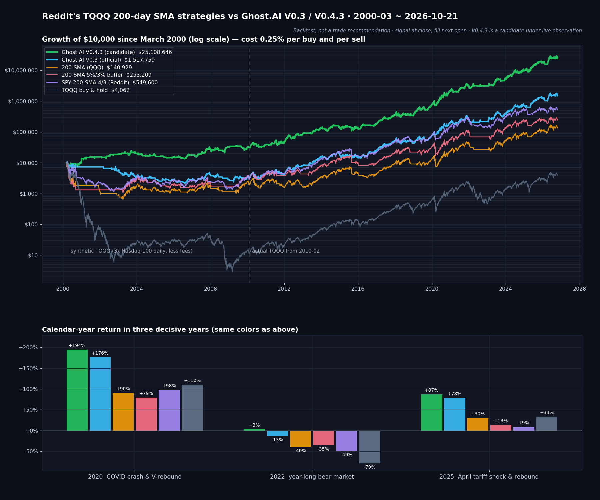

레딧에서 유행하는 TQQQ 200일선 전략, Ghost.AI V0.3·V0.4.3과 26년 백테스트 비교
· Ghost.AI 특집
👻 매일 시그널과 히스토리를 홈페이지에서 한눈에 → www.ghostai.co.kr
해외 레버리지 ETF 커뮤니티에서 "TQQQ는 200일선 위에 있을 때만 들고 있으라"는 전략이 꾸준히 화제입니다. 규칙이 단순하고, TQQQ의 큰 낙폭을 피할 수 있다는 점이 인기의 이유입니다. 이번 특집에서는 이 200일선 전략이 어디서 왔는지 먼저 정리하고, 레딧에서 많이 쓰이는 세 가지 형태를 Ghost.AI 전략 V0.3(운영 중)·V0.4.3(관찰 중)과 같은 조건에서 2000년부터 비교했습니다.
200일선 전략은 어디서 왔나
출발점은 2016년 논문입니다. 마이클 게이드(Michael Gayed)와 찰리 빌렐로(Charlie Bilello)가 발표한 「Leverage for the Long Run」은 미국 기술적 분석가 협회(CMT Association)의 찰스 다우 상(Charles H. Dow Award)을 받았습니다. 규칙은 하나입니다. S&P 500이 200일 이동평균선(200일선) 위에 있으면 레버리지로 보유하고, 아래로 내려가면 단기 국채로 옮깁니다.
1928년부터 2015년까지의 백테스트에서 2배 레버리지를 계속 들고 있으면 최대 낙폭이 −99%였습니다. 대공황 같은 폭락을 그대로 맞기 때문입니다. 200일선 아래에서 국채로 옮기는 규칙을 더하자 위험 대비 수익(샤프 지수)이 0.27에서 0.51로 좋아졌습니다. 논문은 레버리지 성과를 가르는 것은 변동성이며, 주가가 200일선 위에 있을 때 이후 변동성이 평균보다 낮았다는 점을 근거로 들었습니다.
레딧에서는 TQQQ 버전으로 퍼졌습니다. 레버리지 ETF 커뮤니티 r/LETFs에서 이 아이디어를 나스닥 100 3배 ETF인 TQQQ에 맞춘 변형들이 공유됐고, 차트 플랫폼 트레이딩뷰(TradingView)에도 같은 규칙의 스크립트가 여럿 올라와 있습니다. 많이 쓰이는 형태는 세 가지입니다.
| 형태 | 매수 | 매도 | 특징 |
|---|---|---|---|
| ① 기본형 | QQQ가 200일선 위로 | QQQ가 200일선 아래로 | 논문 규칙을 TQQQ에 그대로 |
| ② 5%/3% 버퍼형 | QQQ가 200일선보다 5% 위로 | QQQ가 200일선보다 3% 아래로 | 200일선 근처에서 사고팔기를 반복하는 손실(휩쏘)을 줄이려는 형태 |
| ③ SPY 4/3 | SPY가 200일선보다 4% 위로 | SPY가 200일선보다 3% 아래로 → 이후 6~12개월에 걸쳐 QQQ 분할 매수 | 보유 중 QQQ가 200일선보다 30% 이상 높으면 TQQQ 대신 QQQ (레딧 「SPY 200SMA 4/3」 글) |
인기의 이유는 분명합니다. 차트 하나로 판단할 수 있고, TQQQ가 한 해에 79% 내린 2022년에도 손실을 35~49%로 줄였습니다(아래 백테스트).
비교 방법 — 모두 같은 조건
- 대상: 200일선 세 가지 형태, Ghost.AI V0.3(운영 중), Ghost.AI V0.4.3(관찰 중), TQQQ 단순 보유
- 매매: 모두 TQQQ를 사고팝니다(③은 매도 뒤 QQQ 분할 매수 포함). 전날 종가로 신호를 확인하고 다음 날 시가에 체결합니다.
- 비용: 매수·매도 각각 거래 금액의 0.25%를 뺐습니다. 세금은 제외, 현금 구간 수익은 0으로 계산했습니다.
- 기간: 2000년 3월 ~ 2026년 10월 21일. TQQQ가 상장하기 전인 2010년 2월까지는 나스닥 100 하루 등락의 3배에서 보수와 차입 비용을 뺀 가상 TQQQ를 썼습니다.
- Ghost.AI 전략은 AI 모델 신호로 움직이며, 매매 규칙은 공개하지 않습니다. V0.4.3은 같은 모델의 새 신호 고스트베타(GhostBeta)를 더한 다음 버전 후보입니다(V0.4.3 특집).
결과 — 수익은 높고, 낙폭은 얕았습니다

위: 2000년 3월에 1만 달러로 시작했을 때의 자산(로그 눈금, 비용 반영). 아래: 결정적이었던 세 해의 연 수익률. 초록 = V0.4.3, 하늘색 = V0.3, 주황 = 200일선 기본형, 분홍 = 5%/3% 버퍼형, 보라 = SPY 4/3, 회색 = TQQQ 단순 보유.
연평균 수익률 / 최대 낙폭 (비용 반영)
| 구간 | V0.4.3 | V0.3 | ① 기본형 | ② 5%/3% | ③ SPY 4/3 | TQQQ 보유 |
|---|---|---|---|---|---|---|
| 2000년 3월~ (전체) | +34.2% / −45.5% | +20.8% / −80.0% | +10.5% / −94.0% | +12.9% / −90.2% | +16.3% / −89.6% | −3.2% / −100% |
| 2000~2009 (닷컴 붕괴·금융위기) | +12.2% / −45.5% | −10.6% / −80.0% | −13.6% / −94.0% | −9.7% / −90.2% | −10.0% / −89.6% | −48.6% / −100% |
| 2010년 2월~ (실제 TQQQ) | +49.2% / −34.6% | +44.1% / −39.8% | +29.2% / −58.1% | +30.4% / −62.1% | +36.8% / −55.8% | +42.1% / −81.8% |
| 2010~2018 | +31.2% / −34.6% | +33.0% / −39.8% | +18.9% / −56.7% | +25.2% / −53.4% | +37.3% / −52.6% | +41.9% / −58.1% |
| 2019~ | +72.6% / −30.5% | +57.7% / −39.1% | +42.1% / −58.1% | +36.7% / −62.1% | +36.3% / −55.8% | +42.3% / −81.8% |
| 2025~ | +70.8% / −23.4% | +56.5% / −28.2% | +33.2% / −33.8% | +9.4% / −37.6% | +6.0% / −36.1% | +40.0% / −57.0% |
위험 대비 성과 (2000년 3월~ / 2010년 2월~, 비용 반영)
| V0.4.3 | V0.3 | ① 기본형 | ② 5%/3% | ③ SPY 4/3 | TQQQ 보유 | |
|---|---|---|---|---|---|---|
| 칼마 비율 | 0.75 / 1.42 | 0.26 / 1.11 | 0.11 / 0.50 | 0.14 / 0.49 | 0.18 / 0.66 | −0.03 / 0.51 |
| 샤프 지수 | 1.02 / 1.27 | 0.71 / 1.17 | 0.45 / 0.78 | 0.50 / 0.81 | 0.55 / 0.92 | 0.35 / 0.88 |
| 보유 기간 (2000년~) | 45% | 52% | 73% | 68% | 91% (QQQ 포함) | 100% |
| 1만 달러 → (2000년~) | 2,511만 달러 | 152만 달러 | 14만 달러 | 25만 달러 | 55만 달러 | 0.4만 달러 |
칼마 비율 = 연평균 수익률 ÷ 최대 낙폭 (클수록 낙폭 대비 수익이 큼). 보유 기간 = 전체 기간 중 주식을 들고 있던 비율.
- V0.4.3은 여섯 구간 모두에서 최대 낙폭이 가장 얕았고, 칼마 비율도 모두 1위였습니다. 연평균 수익률은 2010~2018년 한 구간을 빼고 모두 1위였습니다.
- V0.3은 2010년 이후 전체·2019년 이후·2025년 이후 구간에서 세 가지 200일선 전략보다 수익이 높고 낙폭이 얕았습니다.
- 들고 있는 시간은 오히려 짧았습니다. 200일선 전략은 기간의 68~91% 동안 주식을 보유했지만, V0.3은 52%, V0.4.3은 45%만 보유하고 더 높은 수익을 냈습니다.
차이가 난 해 — 2020 · 2022 · 2025
| 해 | V0.4.3 | V0.3 | ① 기본형 | ② 5%/3% | ③ SPY 4/3 | TQQQ 보유 |
|---|---|---|---|---|---|---|
| 2020 코로나 | +194% | +176% | +90% | +79% | +98% | +110% |
| 2022 하락장 | +3% | −13% | −40% | −35% | −49% | −79% |
| 2025 관세 충격 | +87% | +78% | +30% | +13% | +9% | +33% |
200일선은 느립니다. 200일선은 지난 약 10개월 가격의 평균이라, 방향이 바뀌고 한참 뒤에야 신호가 나옵니다. 버퍼를 넣으면 잦은 매매는 줄지만 그만큼 더 늦어집니다.
- 2020년: 5%/3% 버퍼형은 3월 급락이 한참 진행된 3월 13일에 매도하고, 반등이 상당히 진행된 4월 15일에 다시 샀습니다. 세 가지 200일선 전략 모두 TQQQ 단순 보유(+110%)보다 낮았습니다.
- 2022년: 하락이 1년 내내 이어진 해라 200일선 전략도 손실을 줄이는 효과는 있었습니다. 그래도 −35~−49%였습니다. ③은 매도 뒤 QQQ를 나눠 사는 규칙 때문에 하락장 속에서 손실이 더 커졌습니다.
- 2025년: 5%/3% 버퍼형은 3월 11일에 TQQQ를 판 뒤 5월 15일에 다시 샀는데, 다시 산 가격이 판 가격보다 17% 높았습니다. 그 사이 QQQ는 4월 저점에서 25% 반등했습니다.
2010~2018년처럼 꾸준히 오르는 장에서는 이 느림이 큰 문제가 되지 않습니다. 하지만 급락과 급반등이 짧게 오가는 장(2020·2025)과 긴 하락장(2022)에서는 차이가 크게 벌어졌습니다.
솔직하게 — 200일선 전략이 앞선 곳
200일선 전략의 강점은 분명합니다. 규칙이 공개돼 있어 누구나 같은 결과를 확인할 수 있고, 버퍼형과 SPY 4/3은 1년에 한 번 정도만 매매하면 되며, TQQQ 단순 보유의 −80%대 낙폭을 크게 줄였습니다. 성과를 비교할 때 아래 점도 함께 봐야 합니다.
- 2010~2018년 연평균은 ③ SPY 4/3(+37.3%)이 V0.3(+33.0%)·V0.4.3(+31.2%)보다 높았습니다. 이 구간은 TQQQ 단순 보유(+41.9%)가 모든 전략을 앞선 꾸준한 상승장이었습니다. 대신 최대 낙폭은 SPY 4/3 −52.6%, V0.4.3 −34.6%였습니다.
- 2000~2009년은 V0.3도 200일선 전략들과 함께 손실이었습니다(V0.3 연 −10.6%, 200일선 −9.7~−13.6%). 이 약점을 줄인 것이 V0.4.3입니다(연 +12.2%).
- Ghost.AI 전략은 매매가 많습니다. 매수와 매도를 합쳐 V0.3은 1년에 11회, V0.4.3은 19회 정도로 200일선 전략(연 1~7회)보다 잦습니다. 매매 비용은 반영했지만 세금과 실행 부담은 더 커질 수 있습니다.
꼭 함께 봐야 할 점
- 백테스트는 실제 수익이 아닙니다. 세금은 넣지 않았고, 2010년 이전은 가상 TQQQ입니다.
- V0.4.3은 아직 후보입니다. 2026년 10월 20일부터 실제 매매 없이 기록만 하고 있으며, 운영 전략과 실계좌는 V0.3을 따릅니다.
- 200일선 전략의 성과는 형태와 기간에 따라 크게 달라집니다. 이 글의 수치는 같은 조건(전날 종가 신호·다음 날 시가 체결·비용 0.25%)으로 다시 계산한 것이라 원글 작성자의 백테스트와 다를 수 있습니다.
참고
- Michael Gayed, Charlie Bilello, 「Leverage for the Long Run」(2016) — CMT Association · CXO Advisory 요약
- 200일선 변형 규칙: 레딧 r/LETFs 「SPY 200SMA 4/3」 글, 트레이딩뷰 공개 스크립트 「200 SMA (5%/-3% Buffer) for SPY & QQQ」
Ghost.AI — Quantitative AI Investment
Model: DeepGhost v0.3 | Transformer-Based Deep Learning
Coverage: 14 tickers | Updated every trading day after US market close
⚠️ 본 자료는 정보 제공 목적으로만 작성되었으며 투자 권유가 아닙니다. 모든 투자의 책임은 투자자 본인에게 있습니다. 과거 성과가 미래 수익을 보장하지 않습니다.
[유의사항]
- 본 서비스는 불특정 다수를 대상으로 발행되는 단방향 정보 제공 서비스이며, 투자자 개인의 재산 상황·투자 목적·위험 선호도를 반영한 개별 투자 조언이 아닙니다.
- 고스트에이아이 주식회사는 고객과 쌍방향 의사소통(개별 상담, 맞춤형 자문 등)을 제공하지 않습니다.
- 본 콘텐츠는 투자 권유 또는 매매 주문의 청약·청약의 권유에 해당하지 않으며, 최종 투자 판단 및 그에 따른 손익의 책임은 전적으로 투자자 본인에게 있습니다.
고스트에이아이 주식회사